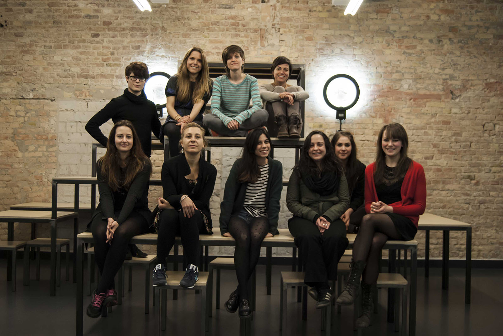

Born as a web community to share your favourite music events back in Italy, frestyl developed to become your personalised, mobile guide to find the best parties and gigs in Berlin.
Nearly 15K events have been suggested, hearted and attended by a dedicated crowd of music lovers, organisers, tastemakers and geeks.
We all thank you for your support, it wouldn’t have been possible without you!
Your favorite, nearly all-female team behind frestyl will move to find new challenges in life, and we’ll bring only good music for the trip.

Featured in:
FluxFM,
Panel at Apple Store,
zdf_neo,
Venture Village